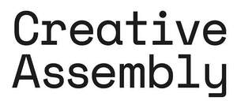

Trade Mark Journal No.2026/010 6 March 2026
UK00004310868 15 December 2025 (41)

- Class 41
- Conference services; Organisation of meetings and conferences; Organisation of seminars and conferences; Arranging of an annual educational conference; Organising of education conferences; Organising of educational conferences; Organization of educational conferences; Arranging of conferences; Arranging conferences; Arranging of an annual conference relating to telecommunications; Organisation of conferences and symposia in the field of medical science; Arranging of an annual conference relating to logistics; Arranging of educational conferences; Arranging of an annual conference relating to procurement; Arranging and conducting of conferences, congresses and symposiums; Conducting of business conferences; Conducting of educational conferences; Organisation of conferences relating to training; Organising of meetings in the field of education; Organisation of conferences, exhibitions and competitions; Organisation of conferences relating to education; Arranging and conducting conferences and seminars; Organising of conferences relating to education; Arranging and conducting of conferences and congresses; Organising of meetings in the field of entertainment; Organisation of conferences related to entertainment; Organising of conferences for educational purposes; Arranging of conferences relating to training; Arranging of conferences relating to business; Arranging, conducting and organisation of conferences; Arranging of conferences relating to trade; Organization of seminars; Arranging of conferences relating to education; Arranging and conducting of business conferences; Organisation of conferences relating to vocational training; Organization of educational symposia; Arranging and conducting educational conferences; Organisation of congresses and conferences for cultural and educational purposes; Organization of seminars and conventions in the field of medicine; Arranging and conducting of conferences; Conferences (Arranging and conducting of -); Arranging and conducting conferences; Planning of conferences for educational purposes; Arranging of conferences relating to entertainment; Organisation of seminars; Provision of facilities for horse-race meetings; Seminars; Arranging of conferences relating to commerce; Arrangement of conferences for educational purposes; Organising of education seminars; Arranging and conducting of commercial, trade and business conferences; Organising of educational seminars; Organisation of symposia relating to training; Organisation of training seminars; Organisation of educational seminars; Presentation of concerts; Arranging of conferences relating to advertising; Arranging and conducting of meetings in the field of education; Conducting of seminars and congresses; Special event planning consultation; Organisation of symposia relating to education; Museum facilities (Provision of -) for presentations; Arranging of workshops and seminars; Organization of educational congresses; Organising of education conventions; Arranging and conducting of meetings in the field of entertainment; Presentation of recitals; Organising of educational congresses; Organisation and presentation of shows; Consultancy relating to arranging and conducting of conferences; Organisation of continuing educational seminars; Organisation of Webinars; Educational seminars; Arranging of conferences relating to cultural activities; Organising of educational lectures; Presentation of live entertainment events; Presentation of radio programmes; Organisation of seminars relating to training; Cinema presentations; Hosting [organising] awards; Organisation of seminars relating to education; Arrangement of conferences for recreational purposes; Consultancy and information services relating to arranging, conducting and organisation of conferences; Special event planning; News reporters services; Conducting educational workshops in the field of business; Reporters services (News -); Sporting event organization; Running seminars in the field of oncology; Presentation of television programmes; Audio-visual display presentations; Arranging of seminars; Organization, arranging and conducting of table tennis games.
Outside of Ordinary Limited